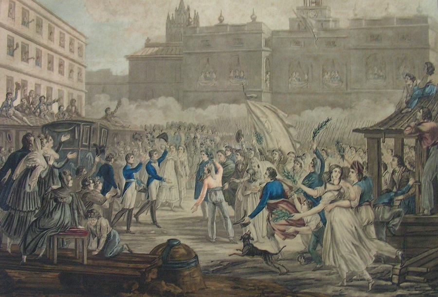
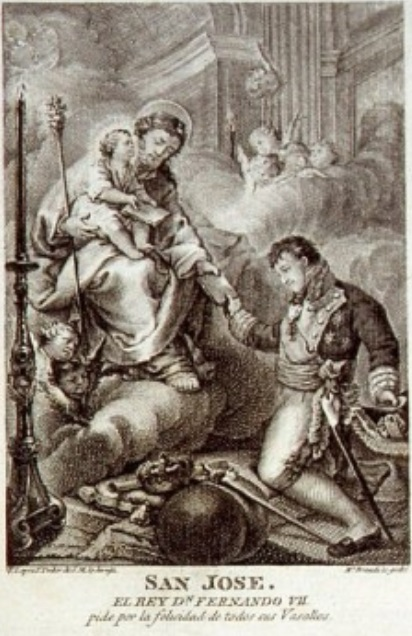

Bienvenidos a Wikipedia
Década Ominosa
titulo
titulo
titulo
titulo
Se denomina Década Ominosa o segunda restauración del absolutismo (1823-1833) al periodo de la historia contemporánea de España que corresponde a la última fase del reinado de Fernando VII de España (1814-1833), tras el Trienio Liberal (1820-1823), en el que rigió la Constitución de Cádiz promulgada en 1812. Algunos historiadores, como Josep Fontana, prefieren la segunda denominación porque extienden el periodo más allá de la muerte de Fernando VII, hasta el fin del sistema absolutista, prolongándolo de esta forma hasta 1834.
Ángel Bahamonde y Jesús A. Martínez comparten esta idea de incluir la «transición pactada que se consolida en 1834» y que constituiría la «última fase» del periodo.
El término Década Ominosa —es decir, abominable— fue acuñado por los liberales que sufrieron la represión y el exilio durante esos diez años. El escritor progresista Benito Pérez Galdós tituló uno de sus Episodios Nacionales El terror de 1824 y un autor tan conservador como Marcelino Menéndez Pelayo calificó esta última etapa del reinado de Fernando VII de «absolutismo feroz, degradante y sombrío». El hispanista francés Jean-Philippe Luis ha matizado esta visión del periodo: «Por una parte, la década ominosa no se reduce al fin de un mundo sino que participa en la construcción del Estado y de la sociedad liberal. Por otra parte, el régimen es al mismo tiempo tiránico y voluntaria o involuntariamente reformador». Esto último constituye lo que Luis llama «la otra cara de la década ominosa».
«Desde muchos puntos de vista, se asiste en el curso de estos diez años a una tentativa de renovación institucional del régimen llevada a cabo por un equipo ministerial muy estable si se le compara con el de la primera restauración: tres ministros de seis permanecen nueve años en funciones».
 lista ordenada
- hola
- como estas
- que estas haciendo
lista desordenada
- hola
- como estas
- que estas haciendo